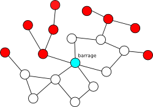
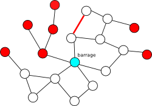
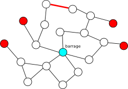

Au pays des castors, l'électricité est produite par un barrage, et toutes les maisons sont reliées par des lignes électriques. Les castors souhaitent construire des lignes électriques supplémentaires afin que la coupure d'une seule ligne ne suffise plus à priver une maison d'électricité.
Aidez les castors en leur montrant où construire les lignes. Moins vous utilisez de lignes, plus vous aurez de points.
|
Cliquez sur deux maisons pour les relier par une ligne. Cliquez sur une ligne pour l'effacer. |
Il suffisait de 3 lignes pour que le réseau résiste à la destruction d'une seule ligne.
| Commençons par repérer les maisons qui ne sont reliées au barrage que par un seul chemin, et qui risquent donc une coupure d'électricité si une seule ligne de ce chemin est coupée. Ces maisons « à risque » sont montrées en rouge sur le dessin ci-contre. |  |
| Le but du sujet est d'ajouter des lignes de sorte à ce qu'il n'y ait plus aucune maison à risque. Par exemple, le schéma ci-contre montre comment l'ajout d'une ligne permet de sécuriser l'alimentation en électricité de deux maisons à risque. |  |
| Afin de construire le moins de lignes possibles, il faut mieux ajouter des lignes reliant entre elles des maisons isolées. Par exemple, le schéma ci-contre montre qu'avec une seule nouvelle ligne on peut retirer 5 maisons à risque par rapport à la situation initiale. |  |
En ajoutant deux lignes de plus, on arrive à la meilleure solution, qui n'utilise que 3 lignes.
Les réseaux, que ce soit des réseaux d'électricité ou de communication, doivent être robustes, c'est-à-dire qu'ils doivent être construits de sorte à ce que la connexion ne soit pas interrompue trop souvent.
Un certain degré de robustesse peut être obtenu en s'assurant que chaque paire de ronds est reliée par plusieurs chemins. Dans le sujet ci-dessus, on demandait qu'il y ait au moins deux chemins distincts entre chaque paire de ronds, mais on aurait pu se poser la question pour trois chemins, par exemple.
Dans le sujet, seriez-vous capable, en ne construisant pas plus de 10 lignes (et sans construire de lignes superposées), de faire en sorte que la coupure de 2 lignes (n'importe lesquelles) ne suffisent pas à déconnecter une maison du réseau ?